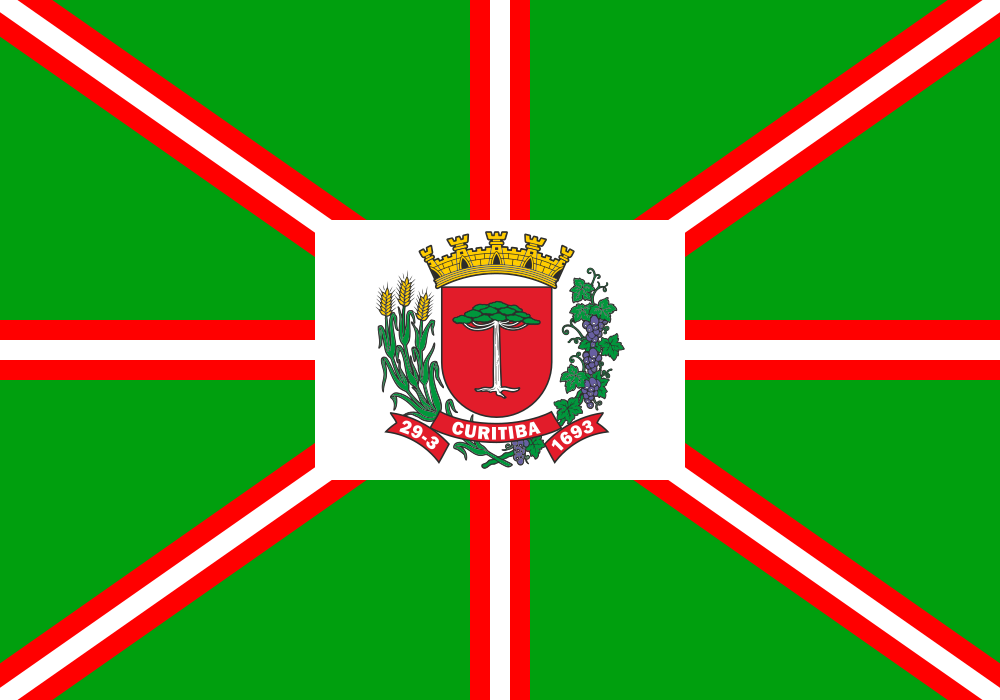

Curitiba é uma cidade localizada no estado do Paraná
e uma capital, tem 332 anos foi fundada por volta de 1661. Antigamente era chamada de Nossa senhora da Luz e bom jesus dos pinhais
os poloneses fundaram curitiba em 1871 e criaram as colonias de Tomas coelho (em Araucaria) muricy (sao jose dos pinhais) Santa candida, Orleans, Lamenha, Pilarzinho, e entre outros, atuaram basicamente na lavoura e no comercio. Hoje formam em Curitiba a maior colonia polonesa no Brasil
Período pré-cabralino e povos indígenas Os primeiros habitantes do Planalto de Curitiba eram paleoíndios nômades que chegaram ali há cerca de 15 mil anos. Há sítios arqueológicos em São José dos Pinhais com presença humana datada de 13 mil anos. Nessa época, a região era mais fria e seca do que é hoje.[34][35] Por volta de quatro mil anos atrás, os proto-jê, ceramistas e agricultores, chegaram ao Paraná e se miscigenaram com os indígenas que já habitavam a região, sendo estes os ancestrais de povos como os caingangues e xoclengues. Há cerca de dois mil anos, os tupis-guaranis, também agricultores e ceramistas, chegaram ao território curitibano.[34][35] Na época da chegada dos primeiros europeus ao Paraná, o norte de Curitiba era habitado por ameríndios falantes de línguas jês, como os caingangues e xoclengues, enquanto o sul era habitado pelos guaranis mbiás e nhandevas.[35] Período colonial Os primórdios do atual município de Curitiba remontam ao século XVII, quando o caminho de Queretiba foi percorrido pelos bandeirantes, que chegavam à procura de ouro fora da Serra do Mar, por intermédio de Paranaguá.[36][37] Eleodoro Ébanos Pereira liderou a primeira expedição oficial que coordenou os serviços de extração de minas de ouro nos Distritos do Sul (inclusive Curitiba), em 1649. Os primeiros nomes que surgem na história de Curitiba, após Ébano Pereira, são os de Baltasar Carrasco dos Reis e Mateus Martins Leme. Entretanto, conforme o historiador Romário Martins:[34][3][4] “ …não foi esse o primeiro grupo povoador do planalto curitibano. Antes dele houve os que fundaram arraiais de mineradores quase estáveis na região aurífera atravessada pelos caminhos de Açungui e do Arraial Queimado (Bocaiuva do Sul), a seguir Borda do Campo (Atuba) e Arraial Grande (São José dos Pinhais).[4] ” 